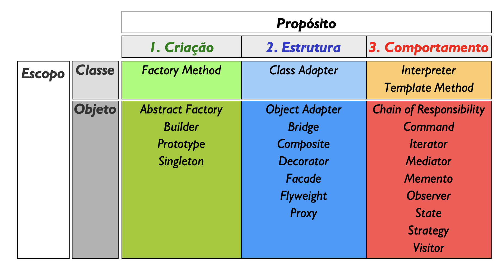
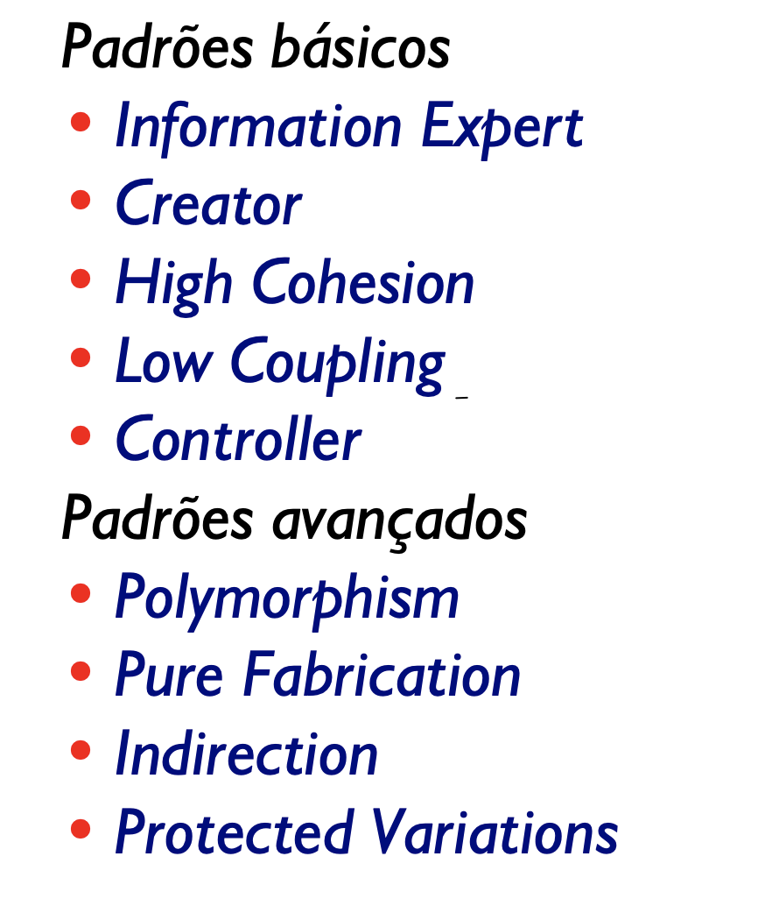
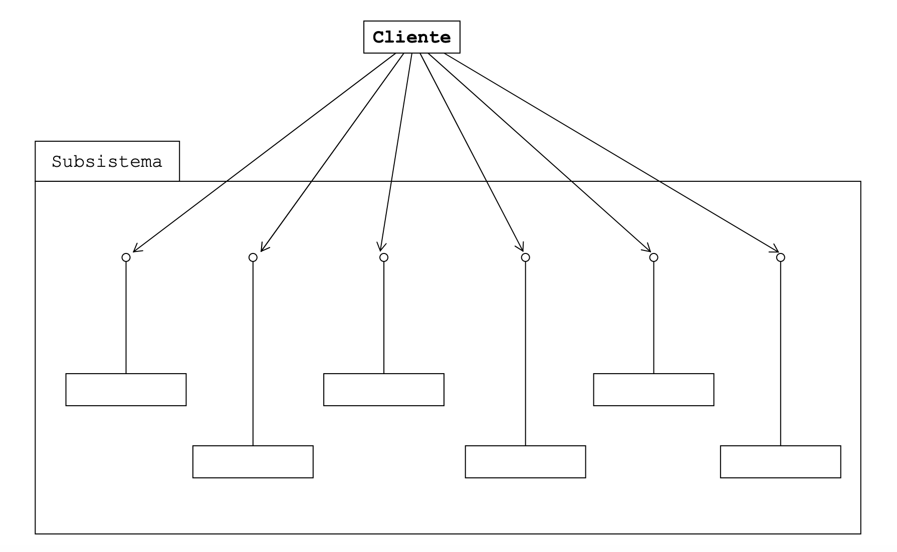
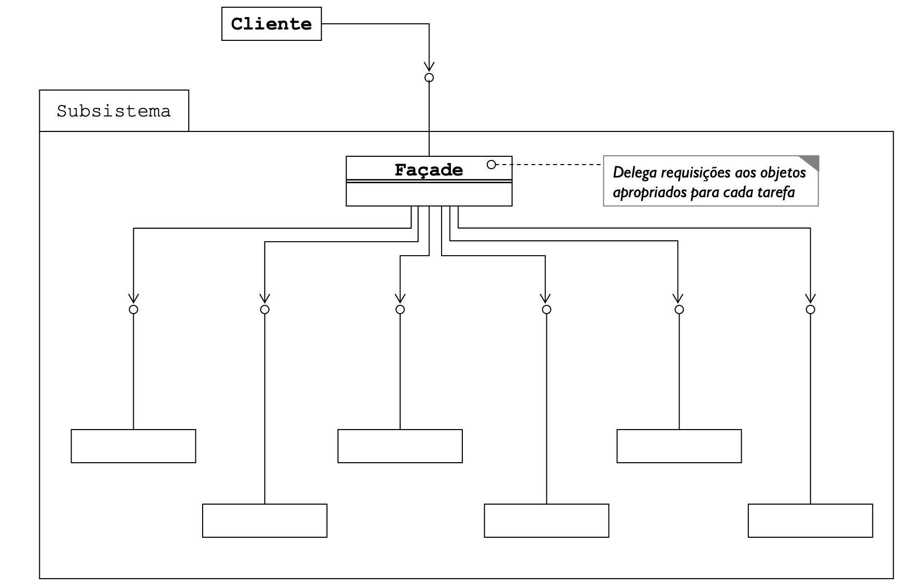

name: inverse class: center, middle, main-title # Alguns Padrões com Exercícios - Parte 1 Laboratório de Programação .footnote[.black.bold[*]Basedo no curso Padrões de Desing com Aplicações em Java - Helder da Rocha] --- #Introdução - Maneira testada ou documentada de alcançar um objetivo qualquer > O objetivo dos padrões é codificar conhecimento (knowing) existente de uma forma que possa ser reaplicado em contextos diferentes - Comuns: - GRASP: General Responsibility and Assignment Software Patterns - 23 padrões do Gang Of Four (GOF) --- #GOF  --- #GRASP  --- #Strategy > Definir uma família de algoritmos, encapsular cada um, e fazê-los intercambiáveis. Strategy permite que algoritmos mudem independentemente entre clientes que os utilizam." [GoF] --- #Strategy - Problema: - Estratégias escolhidas de acordo com a implementação <img src="strategy.png" width="700"> --- #Strategy Use quando: - Classes relacionadas forem diferentes apenas no seu comportamento - Quando você precisar de diferentes variações de um mesmo algoritmo - Quando um algoritmo usa dados que o cliente não deve conhecer - Quando uma classe define muitos comportamentos, e estes aparecem como múltiplas declarações condicionais em suas operações --- # Em tempos de IRPF: Um alguém precisa saber quanto pagar de impostos em suas operações e aplicações. O fato é que se paga imposto é que diferentes aplicações possuem diferentes aliquotas. Como fazer? Implemente para o nosso amigo esse programa: - entra com os valores de aplicações/movimentações (podem ser várias) - No fim, o programa emite quanto de imposto foi pago - 15% para Fundo - 20% no lucro da venda de fundo imobiliário - 15% no lucro da venda do ações > Pense na solução --- # Em tempos de IRPF: ok, você pensou numa solução com baixa ou alta `coesão`? - tipo, tem muito código que repetido? Muita decisão enumerável/qualificável? > "1 classe, 1 objeto, 1 responsabilidade" > Pense em outra solução --- # Em tempos de IRPF: Agora, analise: > Governo federal muda forma de calcular imposto de renda para Fundos. Agora vai ser: - Investimentos com até 6 meses: 25% - Investimentos com até 6 à 12 meses: 20% - Investimentos acima de 12 meses: 15% > Qual impacto da sua solução no seu sistema? --- # Em tempos de IRPF: Quantas vezes a forma de calcular imposto muda no ciclo de vida de um software? Qual o custo de manutenção? - durante o desenvolvimento - pós desenvolvimento, sem clientes - pós desenvolvimento, com clientes > Agora sim, qual a solução? Implemente --- #Facade > "Oferecer uma interface única para um conjunto de interfaces de um subsistema. Façade define uma interface de nível mais elevado que torna o subsistema mais fácil de usar." [GoF] --- #Facade - Problema: - cliente precisa acessar o sistema, mas não tem que saber a complexidade  --- #Facade - Solução: - crie uma interface centralizada de funcionalidades. Uma fachada  --- #Facade Use quando: - Sempre que for desejável criar uma interface para um conjunto de objetos com o objetivo de facilitar o uso da aplicação - Fachadas viabilizam a separação em camadas com alto grau de desacoplamento - Existem em várias partes da aplicação - Fachada da aplicação para interface do usuário - Fachada para sistema de persistência: Data Access Object --- #Abstraia a API de um investidor Projete uma API capaz de visualizar dados de vários módulos de um sistema. A ideia é simplificar o acesso aos dados, às dependências e orquestrar serviços. - Módulo de consulta de operações/custos e associados - consulta operações por tipo, valores envolvidos, impostos pagos, taxas pagas, por mês, corretora ... - Módulo de predição de valor de mercado (futuro) - obtêm previsão de valor e tendência futura de título - Módulo de consulta de ativos - Consulta nas corretoras ativos associados aos clientes - Módulo de consulta de proventos - Consulta na B3 valores de proventos obtidos mês a mês - Módulo de Impostos - relatório de impostos, mês a mês, ajuste no fim --- #Singleton > "Garantir que uma classe só tenha uma única instância, e prover um ponto de acesso global a ela." [GoF] Aplicações - Um único banco de dados - Um único acesso ao arquivo de log - Um único objeto que representa um vídeo - Uma única fachada (Façade pattern) --- #Singleton ```java public class Highlander { private Highlander() {} private static Highlander instancia = null; public static synchronized Highlander obterInstancia() { if (instancia == null) instancia = new Highlander(); return instancia; } } ``` ```java public class Fabrica { public static void main(String[] args) { Highlander h1, h2, h3; //h1 = new Highlander(); // nao compila! h2 = Highlander.obterInstancia(); h3 = Highlander.obterInstancia(); if (h2 == h3) { System.out.println("h2 e h3 são mesmo objeto!"); } } ``` --- #Garantindo acesso único ao Log Imagine que todos os Logs do seu sistema são realizados sobre o mesmo arquivo (ou mesmo banco de dados, o que preferir). - Independente do que aconteça, ele sempre fica aberto para gravações - Cada novo log é sempre persistido Como garantir que todas as gravações de novos logs sejam realizadas de maneira centralizada? Implemente.